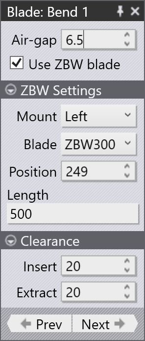
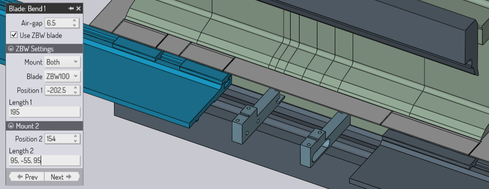
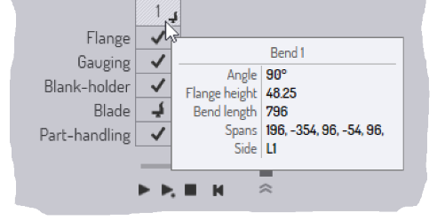
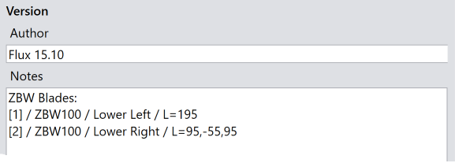

Úprava nožů
Panel nožů
Nastavení nože pro každý ohyb lze upravit v panelu nožů. Pro přístup k panelu nožů pro konkrétní ohyb:
-
Přepněte na daný ohyb kliknutím na číslo v navigátoru ohýbání nebo pomocí kláves PageUp nebo PageDn.
-
Kliknutím na standardní nůž, nůž ZBW nebo nosič nože ZBW otevřete panel nožů.

Panel nožů je zobrazen vedle. Zde jsou různá nastavení, která můžete ovládat z tohoto panelu:
-
Pomocí nastavení Vzduchová mezera upravte vzduchovou mezeru. Při změně vzduchové mezery oproti výchozí hodnotě zobrazí navigátor skládání varování nestandardní vzduchové mezery. Kontrola kolize bude také provedena okamžitě s aktualizovanou vzduchovou mezerou a můžete vzduchovou mezeru vyladit, abyste zabránili kolizím. Bude také vypočítána lisovací síla a pokud nastavíte vzduchovou mezeru tak nízko, že dojde k překročení maximální lisovací síly, navigátor ohýbání to zobrazí jako chybu.
-
Zaškrtávací políčko Použít přídavné ohýbací nástroje lze použít k zapnutí nebo vypnutí použití nožů ZBW pro tento ohyb. Pokud je ohyb příliš dlouhý nebo nejsou k dispozici žádné nože ZBW, může být tato možnost zašedlá (přesunutím myši nad zaškrtávací políčko se dozvíte, proč je zašedlá).
Nastavení ZBW
-
Kliknutím na záhlaví Nastavení přídavného ohýbacího nástroje otevřete danou sekci, pokud je zavřená.
-
Pomocí seznamu Vybavit vyberte, zda má být pro tento ohyb použit nůž namontovaný na levém nosiči nebo na pravém nosiči. U ohybů, které obsahují více segmentů, můžete také zvolit možnost Oba, abyste určili, že některé segmenty budou zpracovány levým nožem, zatímco jiné budou zpracovány pravým nožem.
-
Pomocí voliče Ohýbací nástroj vyberte jeden z nožů ZBW, které jsou k dispozici pro tento stroj.
-
Pomocí voliče Poloha změňte polohu nože podél ohybové osy stroje. U obou nožů tato poloha označuje umístění referenční hrany nože (hrana blíže k dorazovému palci) podél ohybové osy stroje, přičemž 0 je ve středu. Při nastavování této polohy můžete vidět, jak se nůž ZBW okamžitě pohybuje, a navigátor v horní části zobrazuje aktuální stav. Toto jsou možné stavové kontrolky.[1]
-
Je možné, že nůž je o něco kratší než rozpětí ohybu (o 5 až 10 mm kratší). Toto je indikováno jako varování.
-
Je možné, že nůž je o více než 10 mm kratší než rozpětí ohybu (ohyb přesahuje nůž o více než 10 mm na jedné nebo druhé straně). Toto je indikováno jako chyba.
-
Je možné, že nůž během cyklu ohýbání narazí na díl; toto je indikováno jako chyba.
-
-
Pomocí vstupu Délka zadejte délku nože. Je možné vytvořit montáž nože, která má více rozpětí oddělených mezerami.
Vůle
-
Kliknutím na záhlaví Zpětný pohyb ohýbacího nástroje otevřete danou sekci, pokud je zavřená.
-
Pomocí hodnoty vůle Montáž nastavte vůli mezi nožem ZBW a dílem při vložení nože.
-
Pomocí hodnoty vůle Demontáž nastavte vůli mezi nožem ZBW a dílem, když je nůž vysunutý (nebo přesunutý do jiné polohy pro další ohyb).
Délky montáže a mezery

Na obrázku výše jsou vidět obě montáže při použití. Nyní je k dispozici další sekce, která umožňuje zadat polohu a délku druhé montáže. Tato Délka 2 byla nastavena na 95,-55,95. To znamená, že je zde 95 mm sekce nože, 55 mm mezera a další 95 mm sekce nože. Kladná čísla označují délky nožů, zatímco záporná čísla označují mezery mezi segmenty nožů. Měření vždy začínají od referenční hrany nosiče nože (hrana nejblíže dorazovým palcům).
Pomocí tohoto vstupu délky je možné sestavit nůž s libovolným počtem segmentů oddělených mezerami. Upozorňujeme, že délky segmentů nožů jsou omezeny na násobky 5 mm, zatímco mezery lze nastavit na libovolnou hodnotu.
Upozornění 1: Stejný zápis (použití kladných čísel pro rozpětí a záporných čísel pro mezery) je také vidět v popisku, který se zobrazuje pro takový vícesegmentový ohyb.

Upozornění 2: Zápis se také používá k vyjádření délky nože v generovaném NC programu . Sekce Upozornění NC programu zobrazuje kompozici tohoto nože takto:
